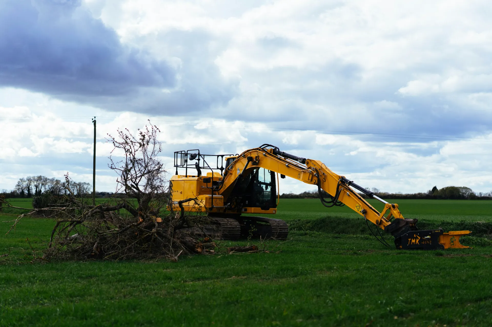
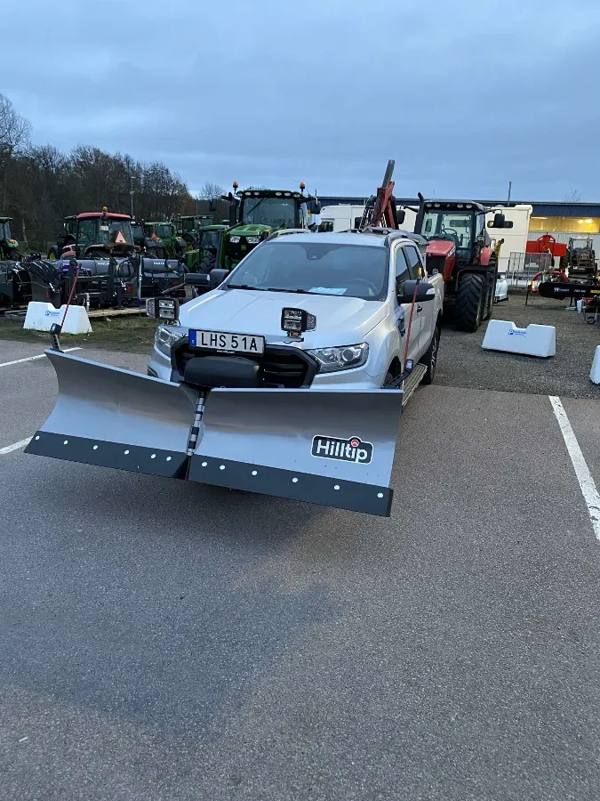
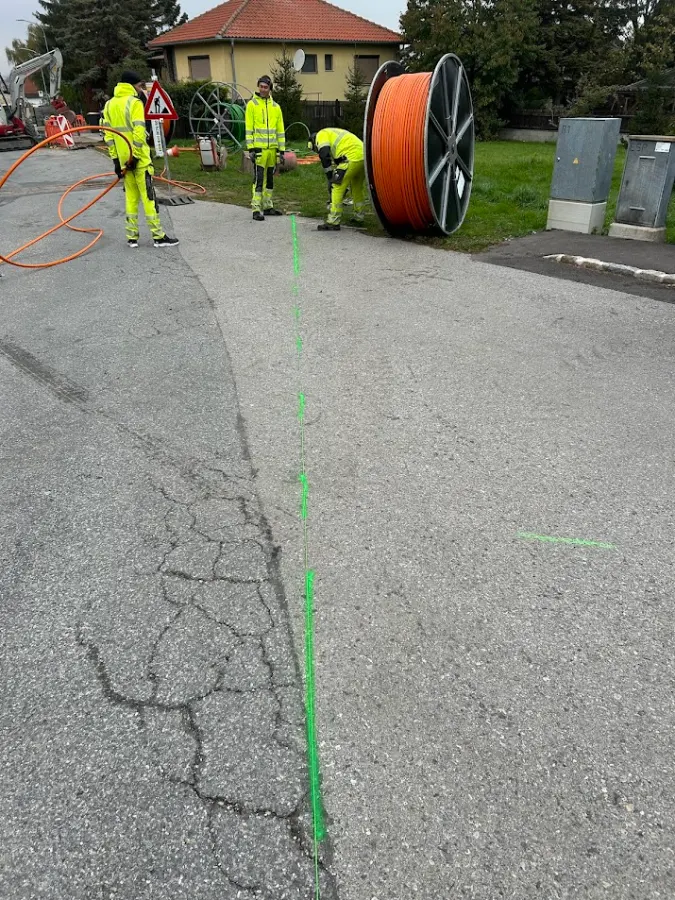
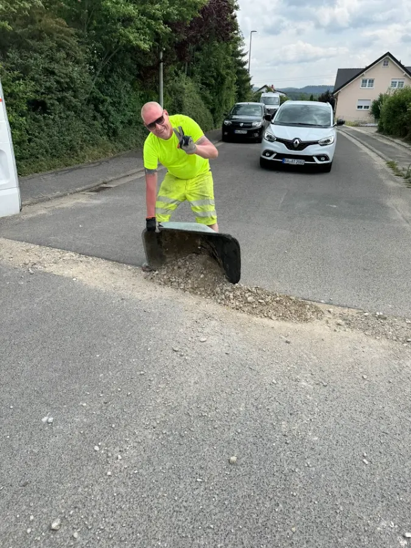
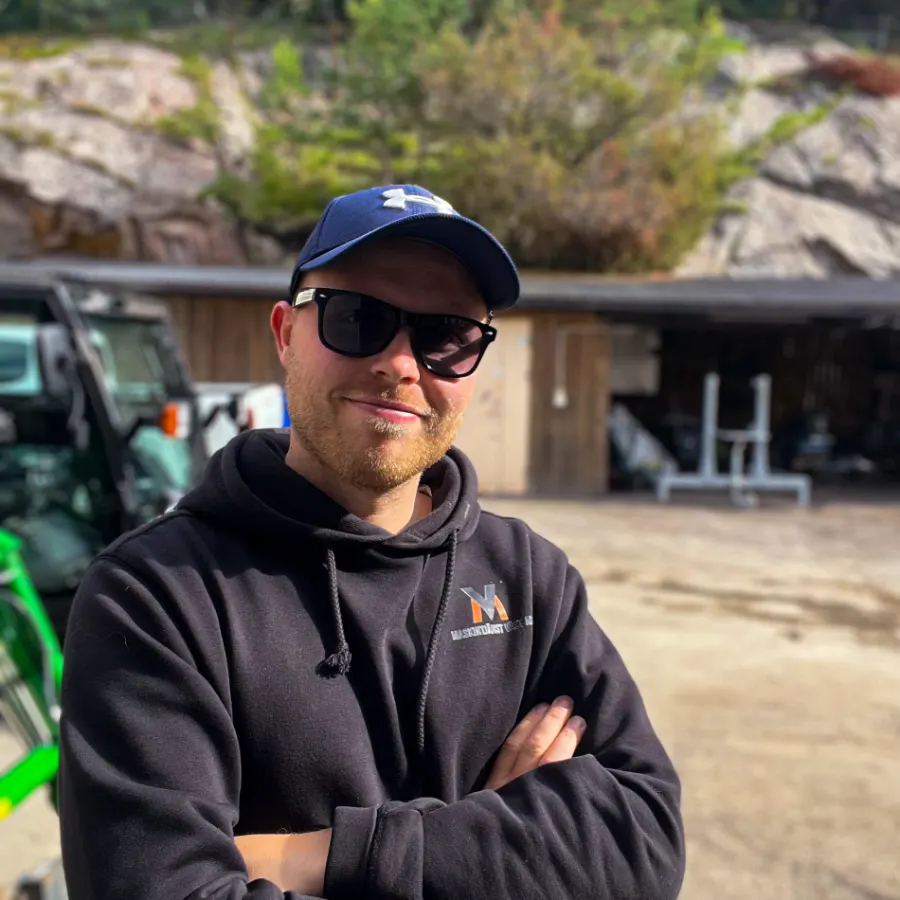

Bostadsrättsföreningar
Grönytor, häckar och snöröjning. Samla behoven för er gemensamma utemiljö.
Hjälp med föreningens gård
STENSTADENS ENTREPRENAD · GÖTEBORG
Vi sköter grönområden, anlägger och förstärker projekt med rätt människor. Och när vintern kommer tar vi hand om snön.
VEM KAN VI HJÄLPA?
Från den egna trädgården till föreningens gård och företagets nästa projekt.
Grönytor, häckar och snöröjning. Samla behoven för er gemensamma utemiljö.
Hjälp med föreningens gårdFörstärk projektet med anläggningskompetens, bemanning eller hjälp med bodetablering.
Förstärk ditt projektHjälp med gräset, häcken och vinterns snö. Berätta vad du vill få gjort.
Hitta rätt tjänstFör gården, fastigheten och projektet. Vi anpassar uppdraget efter din plats och dina behov.

Stenstadens egen maskinparkÄkta snöjour börjar med att vara förberedd.
Under perioden 1 oktober–1 april finns vi tillgängliga dygnet runt. Vi går igenom dina ytor och önskemål, så att uppdraget får en tydlig plan.
Det är kundernas upplevelser som räknas.
”…en fridfull oas.”
”Professionellt och pålitligt arbete…”
Utdrag ur kundomdömen på företagets befintliga webbplats.
Läs omdömenaEtt urval av arbeten och projekt från verksamheten.


En lokal kontakt. Ett bredare kunnande.
Stenstadens utgår från Göteborg och hjälper privatpersoner, föreningar och företag. Vi lyssnar på vad du behöver och anpassar arbetet efter förutsättningar, önskemål och budget.
Mer om oss
Beskriv platsen, behovet och när du vill ha hjälp. Bilder eller en enkel skiss ger oss en bra start.
Vi går igenom omfattning och förutsättningar och tar fram ett prisförslag för uppdraget.
När vi är överens tar vi nästa steg med rätt kompetens och fokus på det som ska bli gjort.
Vi utgår från Göteborg. Bland våra projekt finns också fibergrävning i Österrike och Tyskland. Berätta var ditt uppdrag finns så går vi igenom förutsättningarna.
Ja. Vi arbetar med privatpersoner, företag och bostadsrättsföreningar.
Snöjouren gäller 1 oktober–1 april. Under den perioden finns vi tillgängliga dygnet runt.
Priset beror på omfattning och förutsättningar. Ring eller mejla och beskriv vad du behöver hjälp med så tar vi fram ett prisförslag.
En välskött gård, en tryggare vinter eller fler händer i projektet.
Vi börjar med ett samtal.